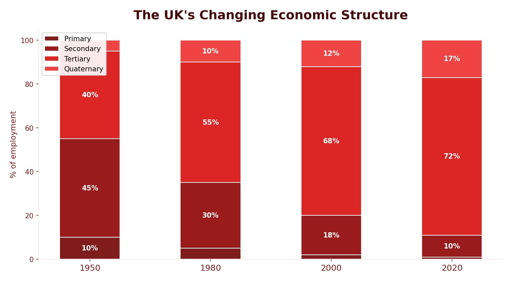

What Is Globalisation?
Globalisation is the process that has created a more connected world, with increases in the movement of goods (trade) and people (migration and tourism) worldwide. Improved transport, faster communications and the growth of transnational corporations (TNCs) have all driven this change.
Globalisation has happened in four main stages: the Industrial Revolution (Stage 1), the post-war period 1945–1989 (Stage 2), the digital age 1989–2008 (Stage 3), and the modern knowledge economy from 2008 onwards (Stage 4).

The Four Stages of Globalisation
Early Globalisation
Led by the UK. Coal-powered factories produced textiles in Burnley, ships in Liverpool, iron in Middlesbrough and steel in Sheffield. These goods were exported to the USA, the Caribbean and India. Railways and steam engines — both invented in Britain — spread globally.
Post-War Globalisation
The USA and Soviet Union became superpowers. Commercial airlines, cargo planes and container ships made trade faster. The UK suffered economically from war damage and began to deindustrialise, losing many of its key manufacturing industries.
Digital Globalisation
Led by the USA, driven by computer technology and the internet. Global supply chains expanded rapidly. Migration within the EU increased due to freedom of movement, benefiting the UK in healthcare, construction and farming.
Modern Globalisation
Characterised by the growth of the digital world and the quaternary sector. Emerging economies such as the BRICS and MINTS countries have industrialised rapidly. The UK has moved towards a post-industrial economy with science parks and advanced manufacturing.
How Has the UK Economy Changed?
The UK’s economic structure has shifted dramatically over the past 200 years. In the 1800s, most people worked in primary and secondary industries — mining coal, building ships and working in factories. Today, most employment is in the tertiary and quaternary sectors, such as finance, IT, healthcare and research.
Deindustrialisation
Deindustrialisation is the decline of a country’s traditional manufacturing industry. In the UK, this happened because of a lack of raw materials, loss of markets, competition from newly industrialising countries and government policy. Cities like Liverpool, Sheffield, Burnley and those in the North East of England were hit hardest — coal mines closed, shipyards shut and steel works declined.
From 1945 to 1975, most UK industries were state-owned. When equipment became outdated and costs rose, industries became unprofitable. In the 1980s, the government closed many coal mines and sold off state-owned industries to private companies — a process called privatisation. This led to mass unemployment in many industrial towns. The government tried to attract new industries, but areas that had experienced heavy decline were often unattractive to investors, triggering a negative multiplier effect.
Advantages and Disadvantages of Globalisation for the UK
Globalisation has brought both opportunities and challenges to the UK economy:
Advantages
- Economic growth — the UK economy has grown largely due to increased trade with the rest of the world.
- Cheaper goods and services — many products are cheaper because they are made in countries where wages are lower.
- High-value production — the UK now specialises in high-value manufacturing and services, where workers earn more.
- Foreign investment — foreign companies invest in the UK, bringing new ideas, technology and jobs.
- Migration — migrants fill skills shortages in areas such as the NHS, construction and farming.
Disadvantages
- Outsourcing — jobs that were once done in the UK are now carried out in countries with cheaper labour, leading to unemployment.
- Less manufacturing — more imports of manufactured goods means fewer goods are produced in the UK, causing factory closures.
- Growing inequality — the gap between low-paid unskilled work and high-paid skilled work is widening. It is harder for low-skilled workers to negotiate better wages when jobs can be outsourced abroad.
The UK economy has shifted from being based on primary and secondary industries to one dominated by tertiary and quaternary employment. This is known as moving to a post-industrial economy.